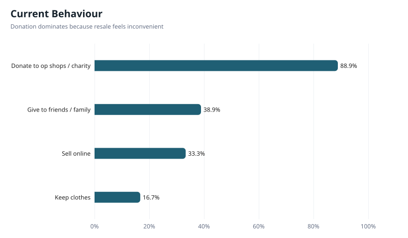
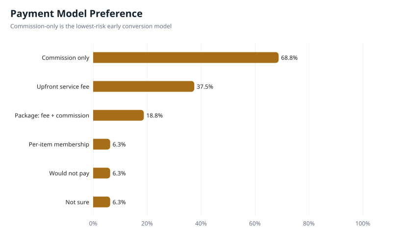
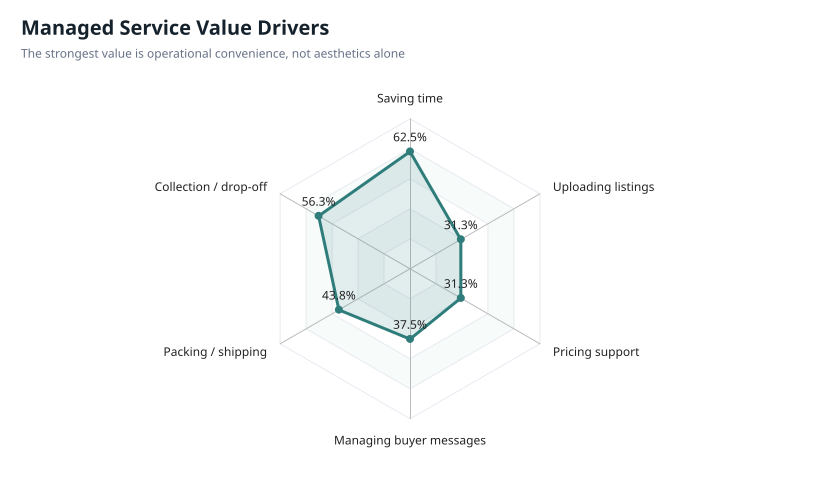
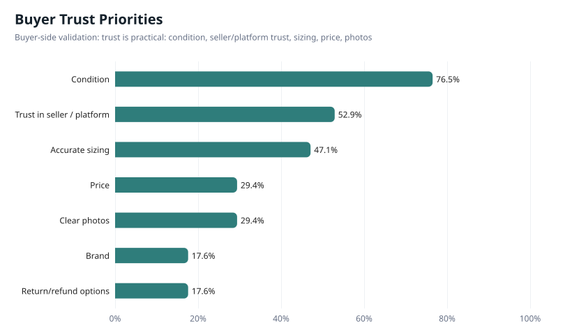

Quantitative visual summary for early-stage validation | 18 responses / 1 survey source | Percent-based view






This table separates survey evidence from business interpretation. Percentages come from the original survey export.
| Area | Survey evidence | Business implication |
|---|---|---|
| Seller acceptance policy | Time required 50%; shipping/delivery 38.9%; low return on effort 38.9% | Create clear accepted-condition and resale-value criteria so Déjà vu does not spend operating time on items that are unlikely to sell. |
| Pricing model | Commission-only 68.8%; upfront service fee 37.5%; small fee + commission 18.8%; per-item membership 6.3% | Commission-only is the strongest selected pricing signal. Per-item membership has a weaker early signal, so it should be tested carefully against commission-first and package options. |
| Service design | Saving time 62.5%; collection/drop-off 56.3%; packing/shipping 43.8%; buyer messages 37.5% | Prioritise operational convenience: collection, listing support, packing/shipping, and buyer communication. |
| Buyer trust | Condition 76.5%; trust in seller/platform 52.9%; accurate sizing 47.1% | Use professional presentation to build trust: condition grading, accurate sizing, clear photos, and reliable platform standards. |
| Behavioural opportunity | Donate 88.9%; sell online 33.3%; keep clothes 16.7% | The opportunity is converting donation/keeping behaviour into managed resale when convenience and expected return are clear. |